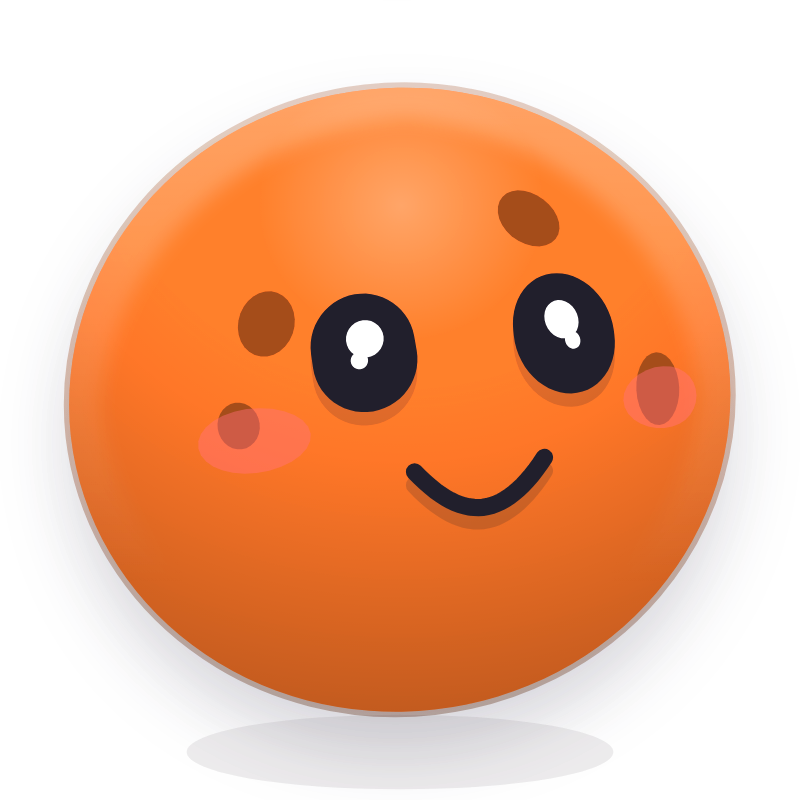

<!doctype html>
<html>
<head>
<meta charset="utf-8">
<title>Effort Keeper reel</title>
<style>
@font-face { font-family: 'Quicksand'; font-weight: 300 700; src: url(quicksand-latin-var.woff2) format('woff2'); }
@font-face { font-family: 'Fredoka'; font-weight: 300 700; src: url(fredoka-latin-var.woff2) format('woff2'); }
@font-face { font-family: 'JetBrains Mono'; font-weight: 100 800; src: url(jetbrains-mono-latin-var.woff2) format('woff2'); }

:root {
  --canvas: rgb(236 233 227);
  --cream: rgb(250 247 242);
  --cream-edge: rgb(214 209 201);
  --cream-lip: rgb(206 201 193);
  --ink: rgb(31 30 28);
  --ink-weak: rgb(112 106 98);
  --ink-faint: rgb(160 154 146);
  --track: rgb(226 222 215);
  --cell: rgb(243 240 234);
  --shadow: 56 52 46;
  --bezel: rgb(217 220 224);
  --hi: rgb(255 255 255 / 0.9);
  --inv: #1b1c20;
  --inv-ink: #F0EEE9;
  --pointer: #111;
  --pointer-edge: #fff;
  --acc: #F47A2F;
  --sheen: rgb(255 255 255 / 0.5);
}
:root[data-theme="dark"] {
  --canvas: rgb(20 20 22);
  --cream: rgb(44 43 46);
  --cream-edge: rgb(62 61 65);
  --cream-lip: rgb(12 12 14);
  --ink: rgb(240 238 233);
  --ink-weak: rgb(168 164 158);
  --ink-faint: rgb(118 115 111);
  --track: rgb(64 63 67);
  --cell: rgb(52 51 55);
  --shadow: 0 0 0;
  --bezel: rgb(58 60 66);
  --hi: rgb(255 255 255 / 0.07);
  --inv: #F0EEE9;
  --inv-ink: #1b1c20;
  --pointer: #fff;
  --pointer-edge: #111;
  --sheen: rgb(255 255 255 / 0.05);
}

* { box-sizing: border-box; margin: 0; }
html, body { width: 1440px; height: 1440px; overflow: hidden; background: var(--canvas); }
body { font-family: 'Quicksand', sans-serif; color: var(--ink); -webkit-font-smoothing: antialiased; }

#stage { position: relative; width: 1440px; height: 1440px; overflow: hidden; background: var(--canvas); }
#cam { position: absolute; left: 0; top: 0; width: 0; height: 0; }
#shape { position: absolute; }
.srf { position: absolute; inset: 0; border-radius: inherit; }
.srf.cream {
  background: var(--cream);
  box-shadow: inset 0 1.5px 0 var(--hi), inset 0 0 0 1.5px var(--cream-edge), 0 var(--wall, 4px) 0 var(--cream-lip), 0 calc(var(--wall, 4px) + 16px) 44px rgb(var(--shadow) / 0.13);
}
:root[data-theme="dark"] .srf.cream { box-shadow: inset 0 1.5px 0 var(--hi), inset 0 0 0 1.5px var(--cream-edge), 0 var(--wall, 4px) 0 var(--cream-lip), 0 calc(var(--wall, 4px) + 16px) 44px rgb(0 0 0 / 0.45); }
.srf.dark, .display {
  background: linear-gradient(168deg, #1d1e23 0%, #15161a 46%, #0e0f13 100%);
  box-shadow: inset 0 3px 10px rgb(0 0 0 / 0.45), inset 0 0 0 1.5px rgb(255 255 255 / 0.07), 0 0 0 1.5px rgb(22 24 28 / 0.6), 0 0 0 9px var(--bezel), 0 0 0 10.5px rgb(46 50 56 / 0.25), 0 22px 44px rgb(var(--shadow) / 0.16);
}
.display { box-shadow: inset 0 3px 10px rgb(0 0 0 / 0.45), inset 0 0 0 1.5px rgb(255 255 255 / 0.07), 0 0 0 1.5px rgb(22 24 28 / 0.6), 0 0 0 6px var(--bezel); }
.srf.orange {
  background: #FF7E33;
  box-shadow: inset 0 0 0 1.5px rgb(255 255 255 / 0.16), inset 0 -3px 0 rgb(0 0 0 / 0.14), 0 6px 0 #B9531B, 0 18px 34px rgb(140 59 2 / 0.32);
}
.srf.accent {
  background: var(--acc);
  box-shadow: inset 0 0 0 1.5px rgb(255 255 255 / 0.16), inset 0 -3px 0 rgb(0 0 0 / 0.12), 0 4px 0 color-mix(in oklab, var(--acc), black 32%), 0 18px 34px rgb(var(--shadow) / 0.18);
}

.c { position: absolute; left: 50%; top: 50%; transform-origin: 50% 50%; }
.mono { font-family: 'JetBrains Mono', monospace; font-variant-numeric: tabular-nums; }
.fredoka { font-family: 'Fredoka', sans-serif; }
.kicker { font-family: 'JetBrains Mono', monospace; font-size: 22px; letter-spacing: 0.16em; }
.key {
  position: absolute; display: flex; align-items: center; justify-content: center; gap: 12px;
  background: var(--cream); border-radius: 22px; color: var(--ink);
  box-shadow: inset 0 1.5px 0 var(--hi), inset 0 0 0 1.5px var(--cream-edge), 0 var(--lip, 4px) 0 var(--cream-lip), 0 6px 14px rgb(var(--shadow) / 0.09);
}
.cell { background: var(--cell); box-shadow: inset 0 1.5px 0 var(--hi), inset 0 0 0 1.5px var(--cream-edge), 0 3px 0 var(--cream-lip); }
.abs { position: absolute; }
#cursor { position: absolute; left: 0; top: 0; width: 60px; height: 60px; }
#rain { position: absolute; inset: 0; pointer-events: none; }
:root { --blk-drop: rgba(56, 52, 46, 0.2); }
:root[data-theme="dark"] { --blk-drop: rgba(0, 0, 0, 0.42); }
/* EffortBloom.module.css's cap recipe */
.cap {
  position: absolute; border-radius: 50%; border: 1px solid;
  border-top-color: color-mix(in srgb, var(--cap) 76%, #fff);
  border-right-color: color-mix(in srgb, var(--cap) 88%, #000);
  border-left-color: color-mix(in srgb, var(--cap) 88%, #000);
  border-bottom-color: color-mix(in srgb, var(--cap) 62%, #000);
  background-color: var(--cap);
  background-image: var(--grain), radial-gradient(115% 100% at 50% 0%, rgba(255,255,255,0.24) 0%, rgba(255,255,255,0.09) 26%, rgba(255,255,255,0) 52%, rgba(0,0,0,0.09) 78%, rgba(0,0,0,0.2) 100%);
  background-size: 120px 120px, 100% 100%;
  background-blend-mode: soft-light, normal;
  box-shadow: 0 calc(2px + var(--lift) * 1.5px) 0 color-mix(in srgb, var(--cap) 52%, #000), 0 calc(3px + var(--lift) * 2.5px) calc(4px + var(--lift) * 3px) var(--blk-drop), inset 0 1px 0 rgba(255,255,255,0.38);
}
.cap.on { box-shadow: 0 calc(3px + var(--lift) * 1px) 0 color-mix(in srgb, var(--cap) 52%, #000), 0 calc(6px + var(--lift) * 1.5px) calc(9px + var(--lift) * 2px) var(--blk-drop), inset 0 1px 0 rgba(255,255,255,0.42); }
.key.ctl {
  --lip: 9px;
  background-color: var(--cream);
  background-image: var(--grain), linear-gradient(180deg, var(--sheen), rgb(255 255 255 / 0));
  background-size: 120px 120px, 100% 100%;
  background-blend-mode: soft-light, normal;
  box-shadow: inset 0 2px 0 var(--hi), inset 0 0 0 1.5px var(--cream-edge), 0 var(--lip) 0 var(--cream-lip), 0 calc(var(--lip) + 6px) 14px rgb(var(--shadow) / 0.12);
  font-family: 'Quicksand', sans-serif; font-weight: 700; letter-spacing: 0.1em; color: var(--ink);
}
.ctl-label { font-size: 27px; }
.key.ctl.sel { --lip: 0px; background-color: var(--cell); box-shadow: inset 0 3px 8px rgb(var(--shadow) / 0.16), inset 0 0 0 1.5px var(--cream-edge); color: var(--acc); }
.key.sel { box-shadow: inset 0 2px 6px rgb(var(--shadow) / 0.16), inset 0 0 0 1.5px var(--cream-edge); background: var(--cell); }
.tile { background: var(--cell); box-shadow: inset 0 1.5px 0 var(--hi), inset 0 0 0 1.5px var(--cream-edge), 0 var(--lip, 4px) 0 var(--cream-lip), 0 8px 18px rgb(var(--shadow) / 0.08); }
#filament { position: absolute; inset: auto 0 0; height: 16px; border-radius: inherit; border-bottom: 3px solid var(--acc); filter: drop-shadow(0 0 10px color-mix(in srgb, var(--acc) 62%, transparent)); }
.bit { position: absolute; left: 0; top: 0; }
</style>
</head>
<body>
<div id="stage">
  <div id="cam">
    <div id="shape">
      <div class="srf cream" id="s-cream"></div>
      <div class="srf dark" id="s-dark"></div>
      <div class="srf orange" id="s-orange"></div>
      <div class="srf accent" id="s-accent"></div>
      <div id="filament"></div>
    </div>
    <div id="contents"></div>
  </div>
  <div id="rain"></div>
  <svg id="cursor" viewBox="0 0 26 26" aria-hidden="true">
    <path d="M5 3.2v17.4c0 .7.8 1 1.3.5l4.1-4.3 2.9 6.6c.2.4.7.6 1.1.4l2.3-1c.4-.2.6-.7.4-1.1l-2.9-6.5h6c.7 0 1-.8.5-1.3L6.3 2.7C5.8 2.2 5 2.5 5 3.2Z"
      fill="var(--pointer)" stroke="var(--pointer-edge)" stroke-width="1.6" stroke-linejoin="round"/>
  </svg>
</div>

<script>
/* ────────────────────────────────────────────────────────────────────────────
   One shape, never cut. Everything is a pure function of t: seek(t) writes
   every style from scratch and nothing is carried between frames.
   ──────────────────────────────────────────────────────────────────────────── */
const T = 23;            // 46 beats at 120 BPM
const BEAT = 0.5;
const CX = 720, CY = 720;
const ORANGE = '#F47A2F';
let VIOLET = '#8B7CF6';   // replaced by the Blossom cap the reel picks
const params = new URLSearchParams(location.search);
if (params.get('theme') === 'dark') document.documentElement.dataset.theme = 'dark';

/* ─── Springs: closed-form step responses ─────────────────────────────────── */
function spring(k, c) {
  const w = Math.sqrt(k), z = c / (2 * w);
  if (z < 1) {
    const wd = w * Math.sqrt(1 - z * z);
    return (tau) => tau <= 0 ? 0 : 1 - Math.exp(-z * w * tau) * (Math.cos(wd * tau) + (z * w / wd) * Math.sin(wd * tau));
  }
  return (tau) => tau <= 0 ? 0 : 1 - Math.exp(-w * tau) * (1 + w * tau);
}
const SNAPPY = spring(500, 36);   // the app's springs.ts
const SMOOTH = spring(350, 30);
const CAMERA = spring(260, 30);
const HAND = spring(170, 26);     // critically damped: a hand doesn't overshoot
const GRIP = spring(900, 60);     // converges while a drag is held
const LEAD = spring(900, 54);
const TRAIL = spring(240, 29);
const SQUASH = spring(700, 38);

/* One spring per change of target, summed. Includes the previous loop, so the
   function is periodic: frame T is frame 0, velocity included. */
function track(events, S = SNAPPY) {
  const v0 = events[0][1];
  const steps = [];
  for (let i = 1; i < events.length; i++) {
    const [t, v, s] = events[i];
    steps.push([t, v - events[i - 1][1], s || S]);
  }
  return (t) => {
    let v = v0;
    for (const [tk, d, s] of steps) v += d * (s(t - tk) + s(t + T - tk));
    return v;
  };
}
const clamp = (v, a = 0, b = 1) => Math.min(b, Math.max(a, v));
const smooth = (x) => { x = clamp(x); return x * x * (3 - 2 * x); };
const easeOut = (x) => 1 - Math.pow(1 - clamp(x), 3);
const lerp = (a, b, x) => a + (b - a) * x;
const since = (t, t0) => { let d = t - t0; if (d < -T / 2) d += T; if (d > T / 2) d -= T; return d; };
const inWin = (t, a, b) => since(t, a) >= 0 && since(t, b) < 0;
let seed = 11;
const rand = () => { seed = (seed * 16807) % 2147483647; return (seed - 1) / 2147483646; };

/* ─── The shape's states ─────────────────────────────────────────────────── */
const GEO = {
  plus:    { w: 132, h: 132, r: 66,  srf: 'orange' },
  row:     { w: 740, h: 224, r: 34,  srf: 'cream' },
  sheet:   { w: 760, h: 780, r: 52,  srf: 'cream' },
  display: { w: 780, h: 300, r: 46,  srf: 'dark' },
  timer:   { w: 780, h: 300, r: 46,  srf: 'dark' },
  pill:    { w: 330, h: 104, r: 52,  srf: 'dark', cam: 'island' },
  island:  { w: 640, h: 390, r: 48,  srf: 'dark' },
  toggle:  { w: 232, h: 128, r: 64,  srf: 'cream' },
  toggleOn:{ w: 232, h: 128, r: 64,  srf: 'accent' },
  tabs:    { w: 600, h: 124, r: 38,  srf: 'cream' },
  swatch:  { w: 780, h: 132, r: 34,  srf: 'cream' },
  controls:{ w: 760, h: 470, r: 48,  srf: 'cream', camW: 800, camH: 610, top: -215 },
  bloomBase:{ w: 760, h: 600, r: 48, srf: 'cream', cam: 'controls', top: -215 },
  blossom: { w: 740, h: 740, r: 64,  srf: 'cream' },
  bento:   { w: 720, h: 720, r: 48,  srf: 'cream' },
  palette: { w: 700, h: 540, r: 38,  srf: 'cream' },
  palette2:{ w: 700, h: 336, r: 38,  srf: 'cream', cam: 'palette' },
  toast:   { w: 620, h: 136, r: 68,  srf: 'dark' },
};
const camScale = (g) => Math.min(2.6, 1060 / Math.max(g.camW || g.w, (g.camH || g.h) * 1.3));

const SCHEDULE = [
  [0.00, 'plus'],
  [1.50, 'row'],
  [3.50, 'sheet'],
  [5.50, 'display'],
  [7.50, 'timer'],
  [10.0, 'pill'],
  [10.5, 'island'],
  [12.0, 'toggle'],
  [12.5, 'toggleOn'],
  [13.0, 'tabs'],
  [14.0, 'controls'],
  [15.0, 'bloomBase'],
  [17.6, 'controls'],
  [19.0, 'bento'],
  [21.0, 'palette'],
  [21.78, 'palette2'],
  [22.0, 'toast'],
  [22.5, 'plus'],
];
/* Into the island, width leads and height follows, each with the app's small
   expand overshoot (TimerIsland EXPAND, bounce 0.18). */
const ISLAND_SPRING = { w: spring(520, 38), h: spring(300, 29), r: spring(300, 29) };
const geo = (key, S) => track(SCHEDULE.map(([t, s]) => [t, GEO[s][key], s === 'island' ? ISLAND_SPRING[key] : undefined]), S);
const shapeW = geo('w'), shapeH = geo('h'), shapeR = geo('r');
// The camera holds still while the palette shrinks around its results.
const camS = track(SCHEDULE.filter(([, s]) => !GEO[s].cam).map(([t, s]) => [t, camScale(GEO[s])]), CAMERA);
const SRF = ['cream', 'dark', 'orange', 'accent'];
const srfW = {};
for (const k of SRF) srfW[k] = track(SCHEDULE.map(([t, s]) => [t, GEO[s].srf === k ? 1 : 0]), k === 'orange' ? spring(1600, 80) : spring(900, 60));
const scaleOf = (state) => camScale(GEO[GEO[state].cam || state]);
const toScreen = (state, x, y) => { const s = scaleOf(state); return [CX + x * s, CY + y * s]; };
const toLocal = (state, [x, y]) => { const s = scaleOf(state); return [(x - CX) / s, (y - CY) / s]; };

/* The accent: orange, violet after the Blossom, orange again for the loop. */
const accMix = track([[0, 0], [17.55, 1, SMOOTH], [22.5, 0, SMOOTH]]);

/* Presses dip the shape; the sheet drag moves it. */
const press = track([[0, 1],
  [0.50, 0.94], [0.58, 1],
  [2.00, 0.975], [2.50, 1],
  [3.46, 0.97], [3.54, 1],
], SNAPPY);
/* The floating timer hangs from its top edge and grows downward. */
const ISL_TOP = -195;
const anchor = track([[0, 0], [10.0, 1, SNAPPY], [12.0, 0, SNAPPY], [14.0, 1, SNAPPY], [19.0, 0, SNAPPY]]);
const anchorTop = track([[0, ISL_TOP], [13.0, -215, spring(900, 60)], [20.0, ISL_TOP, spring(900, 60)]]);
const DRAG_SHEET = [5.0, 5.5];
const DRAG_DY = 230;
const sheetDragDy = (t) => lerp(0, DRAG_DY, smooth((t - 5.02) / 0.4));
const sheetY = track([[0, 0], [5.0, DRAG_DY, GRIP], [5.5, 0, SNAPPY]]);

/* ─── Content ────────────────────────────────────────────────────────────── */
const contents = document.getElementById('contents');
function el(html, parent = contents) {
  const d = document.createElement('div');
  d.className = 'c';
  d.innerHTML = html;
  parent.appendChild(d);
  return d;
}
/* Own enter and exit per piece: a short blur in, a quicker blur out. */
function vis(t, tin, tout, dIn = 0.1) {
  const a = smooth((since(t, tin) - dIn) / 0.16);
  const b = tout == null ? 0 : smooth(since(t, tout) / 0.1);
  const on = tout == null ? since(t, tin) >= 0 : (since(t, tin) >= 0 && since(t, tout) < 0.1);
  return { o: on ? a * (1 - b) : 0, blur: (1 - a) * 10 + b * 8, s: 0.96 + 0.04 * a - 0.03 * b };
}
function visAny(t, wins) {
  let best = { o: 0, blur: 0, s: 1 };
  for (const [a, b, d] of wins) { const v = vis(t, a, b, d); if (v.o > best.o) best = v; }
  return best;
}
function place(node, v, x = 0, y = 0, extra = '') {
  node.style.opacity = v.o.toFixed(4);
  node.style.visibility = v.o < 0.002 ? 'hidden' : 'visible';
  node.style.filter = v.blur > 0.05 && v.o > 0.002 ? `blur(${v.blur.toFixed(2)}px)` : 'none';
  node.style.transform = `translate(-50%, -50%) translate(${x}px, ${y}px) scale(${v.s.toFixed(4)}) ${extra}`;
}
function fade(node, v) {
  node.style.opacity = v.o.toFixed(4);
  node.style.filter = v.blur > 0.05 && v.o > 0.002 ? `blur(${v.blur.toFixed(2)}px)` : 'none';
}

const ICON = (d, size = 24, sw = 2) =>
  `<svg width="${size}" height="${size}" viewBox="0 0 24 24" fill="none" stroke="currentColor" stroke-width="${sw}" stroke-linecap="round" stroke-linejoin="round">${d}</svg>`;
const I = {
  plus: '<path d="M12 5v14M5 12h14"/>',
  cross: '<path d="M6 6l12 12M18 6 6 18"/>',
  book: '<path d="M5 4.5A1.5 1.5 0 0 1 6.5 3H19v15H6.5A1.5 1.5 0 0 0 5 19.5z"/><path d="M5 19.5A1.5 1.5 0 0 0 6.5 21H19v-3"/><path d="M9 7.5h6"/>',
  undo: '<path d="M9 14 4 9l5-5"/><path d="M4 9h10.5a5.5 5.5 0 0 1 0 11H11"/>',
  search: '<circle cx="11" cy="11" r="7"/><path d="m20 20-3.5-3.5"/>',
  clock: '<circle cx="12" cy="12" r="9"/><path d="M12 7v5l3 2"/>',
  chart: '<path d="M4 20V10M10 20V4M16 20v-7M22 20H2"/>',
  drop: '<path d="M12 3s6 6.2 6 10.5a6 6 0 0 1-12 0C6 9.2 12 3 12 3Z"/>',
  flower: '<circle cx="12" cy="12" r="2.5"/><path d="M12 9.5a3 3 0 1 1 0-6 3 3 0 1 1 0 6M12 14.5a3 3 0 1 0 0 6 3 3 0 1 0 0-6M9.5 12a3 3 0 1 1-6 0 3 3 0 1 1 6 0M14.5 12a3 3 0 1 0 6 0 3 3 0 1 0-6 0"/>',
};

/* ── plus key: plus → loader → check ── */
const cPlus = el(`<div style="color:#fff">${ICON(I.plus, 60, 2.4)}</div>`);
const cLoad = el(`<svg width="72" height="72" viewBox="0 0 72 72" fill="none" stroke="#fff" stroke-width="6" stroke-linecap="round">
    <circle id="ld-arc" cx="36" cy="36" r="26" pathLength="100" stroke-dasharray="30 100"/>
    <path id="ld-check" d="M23 37l9 9 17-19" pathLength="100" stroke-dasharray="100 100"/>
  </svg>`);
const ldArc = cLoad.querySelector('#ld-arc'), ldCheck = cLoad.querySelector('#ld-check');

/* ── effort row + hold pad ── */
const WEEK = [1, 1, 0.55, 1, 1, 0.8];
const cRow = el(`
  <div style="position:relative;width:680px;height:170px;display:flex;align-items:center;gap:30px">
    <div id="r-hold" style="position:absolute;left:-30px;top:-27px;bottom:-27px;border-radius:34px 0 0 34px;background:color-mix(in oklab, var(--acc) 12%, transparent)"></div>
    <div class="cell" style="flex:none;width:100px;height:100px;border-radius:26px;display:flex;align-items:center;justify-content:center;color:var(--acc)">${ICON(I.book, 46, 2)}</div>
    <div style="flex:1;display:flex;flex-direction:column;gap:14px">
      <div style="display:flex;align-items:baseline;justify-content:space-between">
        <span class="fredoka" style="font-size:50px;font-weight:600;letter-spacing:-0.01em">Reading</span>
        <span class="mono" id="r-count" style="position:relative;font-size:32px;width:220px;height:40px"></span>
      </div>
      <div style="display:flex;align-items:center;gap:18px">
        <div id="r-week" style="display:flex;gap:7px;align-items:flex-end;height:40px">
          ${[0, 1, 2, 3, 4, 5, 6].map(() => '<div style="width:9px;border-radius:4px;background:var(--acc)"></div>').join('')}
        </div>
        <div style="position:relative;flex:1;height:10px;border-radius:5px;background:var(--track)">
          <div id="r-bar" style="position:absolute;left:0;top:0;bottom:0;border-radius:5px;background:var(--acc)"></div>
        </div>
      </div>
    </div>
  </div>`);
const rCount = cRow.querySelector('#r-count'), rBar = cRow.querySelector('#r-bar'), rHold = cRow.querySelector('#r-hold');
const rWeek = [...cRow.querySelectorAll('#r-week > div')];
const countSpan = (n) => {
  const s = document.createElement('span');
  s.style.cssText = 'position:absolute;right:0;top:0;white-space:nowrap';
  s.innerHTML = `${n} <span style="color:var(--ink-faint)">/</span> 30 <span style="font-size:0.75em;color:var(--ink-weak)">min</span>`;
  return s;
};
const ROW_COUNTS = [[15, 1.5], [20, 3.0]].map(([n, at]) => { const s = countSpan(n); rCount.appendChild(s); return [s, at]; });
const minutes = track([[0, 15], [3.0, 20, SMOOTH], [4.0, 25, SMOOTH], [4.5, 30, SMOOTH], [5.6, 15, SMOOTH]], SMOOTH);

const cPad = el(`
  <div style="position:relative;width:680px;height:120px">
    <div class="key" style="left:0;top:0;width:270px;height:112px;font-size:44px;font-weight:600"><span class="fredoka">+5m</span></div>
    <div class="key" style="left:290px;top:0;width:270px;height:112px;font-size:44px;font-weight:600"><span class="fredoka" style="color:var(--acc)">+15m</span><span style="font-size:28px;color:var(--ink-weak);font-weight:600">done</span></div>
    <div class="key" style="left:580px;top:0;width:100px;height:112px;color:var(--ink-weak)">${ICON(I.cross, 36, 2)}</div>
  </div>`);
const padKeys = [...cPad.querySelectorAll('.key')];

/* The stamp: struck where the act happened. */
function stamp(text, big) {
  return el(`<div class="fredoka" style="white-space:nowrap;padding:${big ? '14px 30px' : '10px 22px'};border-radius:999px;font-size:${big ? 46 : 36}px;font-weight:600;color:var(--acc);background:var(--cream);box-shadow:inset 0 0 0 3px var(--acc), 0 10px 24px rgb(var(--shadow) / 0.14)">${text}</div>`);
}
const cStamp1 = stamp('+5m');
const cStamp2 = stamp('Done', true);

/* ── the effort sheet ── */
const SEG = 6;
const cSheet = el(`
  <div style="position:relative;width:680px;height:720px">
    <div style="position:absolute;left:50%;top:0;width:110px;height:14px;margin-left:-55px;border-radius:7px;background:var(--track);box-shadow:inset 0 0 0 1.5px var(--cream-edge)"></div>
    <div class="kicker" style="position:absolute;left:0;top:62px;color:var(--acc)">IMPORTANT · FRI 25</div>
    <div class="fredoka" style="position:absolute;left:-2px;top:96px;font-size:72px;font-weight:600;letter-spacing:-0.015em">Reading</div>
    <div class="key" style="right:0;top:84px;width:88px;height:88px;border-radius:24px;color:var(--ink-weak)">${ICON(I.cross, 34, 2)}</div>
    <div class="display" style="position:absolute;left:0;right:0;top:236px;height:236px;border-radius:30px;color:#F0EEE9">
      <div class="kicker" style="position:absolute;left:36px;top:32px;color:rgb(240 238 233 / 0.5)">LOGGED</div>
      <div id="sh-count" class="fredoka" style="position:absolute;left:34px;top:70px;height:90px;width:400px;font-size:96px;font-weight:600;line-height:1"></div>
      <div id="sh-segs" style="position:absolute;left:36px;right:36px;bottom:34px;display:flex;gap:8px">
        ${Array.from({ length: SEG }, () => '<div style="flex:1;height:16px;border-radius:5px"></div>').join('')}
      </div>
    </div>
    <div class="key" id="sh-a" style="left:0;top:512px;width:250px;height:108px;font-size:42px;font-weight:600"><span class="fredoka" style="color:var(--acc)">+5m</span></div>
    <div class="key" id="sh-b" style="left:268px;top:512px;width:300px;height:108px;font-size:42px;font-weight:600">
      <span id="sh-b-n" class="fredoka" style="position:relative;color:var(--acc);width:92px;height:52px"></span><span style="font-size:27px;color:var(--ink-weak);font-weight:600">done</span></div>
    <div class="key" style="left:586px;top:512px;width:94px;height:108px;color:var(--ink-weak)">${ICON(I.undo, 34, 2)}</div>
    <div class="kicker" style="position:absolute;left:0;bottom:0;color:var(--ink-faint)">AVG 28M / DAY · 19 OF 28 DAYS</div>
  </div>`);
const shCount = cSheet.querySelector('#sh-count');
const shSegs = [...cSheet.querySelectorAll('#sh-segs > div')];
const shA = cSheet.querySelector('#sh-a'), shB = cSheet.querySelector('#sh-b');
const SH_COUNTS = [[20, 3.5], [25, 4.0], [30, 4.5]].map(([n, at]) => {
  const s = document.createElement('span');
  s.style.cssText = 'position:absolute;left:0;top:0;white-space:nowrap';
  s.innerHTML = `${n}<span style="font-size:44px;color:rgb(240 238 233 / 0.45);margin-left:14px">/ 30</span>`;
  shCount.appendChild(s);
  return [s, at];
});
const shBn = cSheet.querySelector('#sh-b-n');
const SH_B = [['+10m', 3.5], ['+5m', 4.0]].map(([n, at]) => {
  const s = document.createElement('span');
  s.style.cssText = 'position:absolute;right:0;top:0;white-space:nowrap';
  s.textContent = n;
  shBn.appendChild(s);
  return [s, at];
});
const SHEET_GRAB_Y = -353;   // the grabber, in the sheet's own coordinates

/* Confetti: a small burst from the chip, then a curtain over the whole frame. */
const CONFETTI = ['#f97316', '#facc15', '#22c55e', '#06b6d4', '#6366f1', '#d946ef', '#f43f5e'];
const burstLayer = el('<div style="position:relative;width:0;height:0"></div>');
const BURST = Array.from({ length: 26 }, (_, i) => {
  const a = -Math.PI / 2 + (rand() - 0.5) * 2.4;
  const v = 520 + rand() * 520;
  const size = 10 + rand() * 9;
  const n = document.createElement('div');
  n.className = 'bit';
  n.style.cssText += `width:${size}px;height:${size * (rand() < 0.4 ? 1 : 0.6)}px;border-radius:${rand() < 0.45 ? '50%' : '2px'};background:${CONFETTI[i % CONFETTI.length]}`;
  burstLayer.firstElementChild.appendChild(n);
  return { n, vx: Math.cos(a) * v, vy: Math.sin(a) * v, spin: (rand() - 0.5) * 900 };
});
const BURST_AT = 4.52, BURST_X = 78, BURST_Y = 170;
const rain = document.getElementById('rain');
const RAIN = Array.from({ length: 110 }, (_, i) => {
  const ribbon = rand() < 0.35;
  const size = 14 + rand() * 12;
  const n = document.createElement('div');
  n.className = 'bit';
  n.style.cssText += `width:${ribbon ? size * 0.55 : size}px;height:${ribbon ? size * 2.1 : size * (rand() < 0.5 ? 1 : 0.62)}px;border-radius:${!ribbon && rand() < 0.4 ? '50%' : '3px'};background:${CONFETTI[i % CONFETTI.length]}`;
  rain.appendChild(n);
  return { n, x: rand() * 1540 - 50, lag: rand() * 0.55, fall: 1500 + rand() * 700, sway: 20 + rand() * 50, freq: 2 + rand() * 3, phase: rand() * 6.28, spin: (rand() < 0.5 ? -1 : 1) * (300 + rand() * 500), flip: 3 + rand() * 5 };
});
const RAIN_AT = 5.96;

/* ── the day's display ── */
const DSEG = 14;
const cDisp = el(`
  <div style="position:relative;width:690px;height:220px">
    <span class="kicker" style="position:absolute;left:0;top:0;color:rgb(240 238 233/0.5)">TODAY</span>
    <div id="d-segs" style="position:absolute;left:0;right:0;bottom:6px;display:flex;gap:7px">
      ${Array.from({ length: DSEG }, () => '<div style="flex:1;height:16px;border-radius:5px"></div>').join('')}
    </div>
  </div>`);
const dSegs = [...cDisp.querySelectorAll('#d-segs > div')];
const dispNumber = (n, open, done) => el(`
  <div style="position:relative;width:690px;height:220px;color:#F0EEE9">
    <span class="fredoka" style="position:absolute;left:-4px;top:26px;font-size:124px;font-weight:600;line-height:1;letter-spacing:-0.02em">${n}<span style="font-size:48px;color:rgb(240 238 233/0.5);margin-left:6px">%</span></span>
    <span style="position:absolute;right:0;top:108px;font-size:28px;font-weight:600;color:rgb(240 238 233/0.55)">${open} open · ${done} done</span>
  </div>`);
const cD92 = dispNumber(92, 1, 10), cD100 = dispNumber(100, 0, 11);
const cDone = el(`
  <div style="width:690px;text-align:center;color:#F0EEE9">
    <div class="kicker" style="color:rgb(240 238 233/0.5)">11 OF 11</div>
    <div class="fredoka" style="margin-top:18px;font-size:64px;font-weight:600;letter-spacing:-0.01em">You’re done for today.</div>
  </div>`);
const litSegs = track([[0, 12.6], [6.0, 14, spring(120, 20)], [7.4, 12.6]], SMOOTH);

/* ── timer ── */
const TRACK_L = -330, TRACK_R = 180, SPAN = TRACK_R - TRACK_L;
const KNOB_Y = 94;
const cTimer = el(`
  <div style="position:relative;width:690px;height:230px;color:#F0EEE9">
    <span class="kicker" style="position:absolute;left:0;top:0;color:rgb(240 238 233/0.5)">FOCUS · READING</span>
    <div id="tm-digits" class="mono" style="position:absolute;left:-6px;top:40px;font-size:112px;font-weight:500;letter-spacing:-0.03em;line-height:1"></div>
    <div class="key" style="right:0;top:26px;width:132px;height:132px;border-radius:36px">
      <svg width="64" height="64" viewBox="0 0 24 24"><path id="tm-a" fill="currentColor"/><path id="tm-b" fill="currentColor"/></svg>
    </div>
    <div id="tm-track" style="position:absolute;left:${TRACK_L + 345}px;top:204px;height:10px;border-radius:5px;background:rgb(255 255 255/0.1);transform-origin:0 50%"></div>
    <div id="tm-fill" style="position:absolute;left:${TRACK_L + 345}px;top:204px;height:10px;border-radius:5px;background:var(--acc);transform-origin:0 50%"></div>
    <div id="tm-knob" style="position:absolute;top:209px;border-radius:14px;background:repeating-linear-gradient(90deg, #F0EEE9 0 4px, rgb(206 202 196) 4px 6px);box-shadow:inset 0 0 0 1.5px rgb(255 255 255/0.6),0 3px 0 rgb(0 0 0/0.4)"></div>
  </div>`);
const tmDigits = cTimer.querySelector('#tm-digits'), tmA = cTimer.querySelector('#tm-a'), tmB = cTimer.querySelector('#tm-b');
const tmTrack = cTimer.querySelector('#tm-track'), tmFill = cTimer.querySelector('#tm-fill'), tmKnob = cTimer.querySelector('#tm-knob');
const PLAY = [[[8, 5], [13.5, 8.5], [13.5, 15.5], [8, 19]], [[13.5, 8.5], [19, 12], [19, 12], [13.5, 15.5]]];
const PAUSE = [[[6.5, 5], [10.5, 5], [10.5, 19], [6.5, 19]], [[13.5, 5], [17.5, 5], [17.5, 19], [13.5, 19]]];
const playMorph = track([[0, 0], [8.0, 1, SNAPPY], [9.9, 0]], SNAPPY);
const SCRUB = [8.5, 9.5];
const P0 = 0.06, PAST = 190;
/* While held, the hand is the value. Past the end it keeps going and the bar resists. */
const scrubHandX = (t) => {
  const a = TRACK_L + SPAN * P0;
  if (t < 8.52) return a;
  if (t < 8.95) return lerp(a, TRACK_R, smooth((t - 8.52) / 0.43));
  return lerp(TRACK_R, TRACK_R + PAST, easeOut((t - 8.95) / 0.45));
};
/* The app's own rubber band (utils/rubberBand.ts): a square-root pull with a
   wall behind the wall, fed the total travel past the edge. */
const GIVE = 7.5, MAX_PULL = 96;
const rubber = (e) => Math.min(MAX_PULL, Math.sqrt(Math.max(0, e)) * GIVE);
const RELEASE = spring(600, 36);
function timerValues(t) {
  if (inWin(t, 7.0, SCRUB[0])) return { end: TRACK_L + SPAN * Math.min(P0, 0.12 * Math.max(0, since(t, 8.0))), stretch: 0 };
  if (t >= SCRUB[0] && t < SCRUB[1]) {
    const hx = scrubHandX(t);
    return { end: Math.min(hx, TRACK_R), stretch: hx > TRACK_R ? rubber(hx - TRACK_R) : 0 };
  }
  return { end: TRACK_R, stretch: rubber(PAST) * (1 - RELEASE(since(t, SCRUB[1]))) };
}

/* ── the floating timer: a pill that opens into an island; the blob answers pokes ── */
const cIsland = el(`<div style="position:relative;width:0;height:0;color:#F0EEE9">
  <div id="is-blob" style="position:absolute;left:0;top:0;width:200px;height:200px">
    ${['calm', 'startled', 'happy', 'proud'].map((m) => ``).join('')}
  </div>
  <div id="is-digits" class="mono" style="position:absolute;left:0;top:0;font-size:52px;font-weight:500;letter-spacing:-0.02em;line-height:1;white-space:nowrap"></div>
  <div id="is-more" style="position:absolute;left:0;top:0">
    <div class="fredoka abs" style="left:0;top:0;font-size:40px;font-weight:600;white-space:nowrap;color:rgb(240 238 233/0.72)">Reading</div>
  </div>
  <div id="is-keys" style="position:absolute;left:-272px;top:88px;width:544px;display:flex;gap:18px">
    ${[['Pause', '<path d="M8 5v14M16 5v14"/>', '#F0EEE9'], ['Stop', '<rect x="6" y="6" width="12" height="12" rx="2"/>', '#F58C84']].map(([l, d, c]) => `<div style="flex:1;height:96px;border-radius:26px;display:flex;align-items:center;justify-content:center;gap:14px;font-size:32px;font-weight:600;color:${c};background:rgb(255 255 255/0.07);box-shadow:inset 0 0 0 1.5px rgb(255 255 255/0.08),0 3px 0 rgb(0 0 0/0.5)">${ICON(d, 30, 2.4)}${l}</div>`).join('')}
  </div>
</div>`);
const isBlob = cIsland.querySelector('#is-blob'), isFaces = [...cIsland.querySelectorAll('.is-face')];
const isDigits = cIsland.querySelector('#is-digits'), isMore = cIsland.querySelector('#is-more'), isKeys = cIsland.querySelector('#is-keys');
const ISLAND_OPEN = spring(420, 34);  // expanding carries a little overshoot, like the app's EXPAND
const isOpen = track([[0, 0], [10.5, 1, ISLAND_OPEN], [12.0, 0]]);
const POKES = [11.0, 11.25, 11.5];
const poke = (t) => POKES.reduce((v, p) => v + (SQUASH(since(t, p)) - SQUASH(since(t, p) - 0.08)), 0);

/* ── toggle knob → tab indicator: one element, two edges on two springs ── */
const cSwitch = el('<div style="position:relative;width:0;height:0"><div id="knob" class="key"></div></div>');
const knob = cSwitch.querySelector('#knob');
const KL = track([[0, -104], [12.5, 0, TRAIL], [13.0, -288, LEAD], [13.5, 4, TRAIL], [14.0, -104]]);
const KR = track([[0, 0], [12.5, 104, LEAD], [13.0, -4, TRAIL], [13.5, 288, LEAD], [14.0, 0]]);
const KH = track([[0, 104], [13.0, 94], [14.0, 104]]);
const KRad = track([[0, 52], [13.0, 28], [14.0, 52]]);
const cTabs = el(`
  <div style="position:relative;width:576px;height:94px">
    <span class="kicker abs" style="left:0;width:284px;top:34px;text-align:center;font-size:23px" id="tab-w">WEEKS</span>
    <span class="kicker abs" style="left:292px;width:284px;top:34px;text-align:center;font-size:23px" id="tab-p">PACE</span>
  </div>`);
const tabW = cTabs.querySelector('#tab-w'), tabP = cTabs.querySelector('#tab-p');
const tabOn = track([[0, 0], [13.5, 1, SMOOTH], [14.0, 0]]);

/* ── swatches → Blossom ── */
const SW = ['#E8736C', ORANGE, '#5DAE4B', '#12B5A0', '#3A9FEF', '#9C8CF2', '#E26FB6'];
const SW_SIZE = 72, SW_PITCH = 88;
const swX = (i) => (i - 3.5) * SW_PITCH;
const cSwatch = el(`
  <div style="position:relative;width:${8 * SW_PITCH - 16}px;height:${SW_SIZE}px">
    ${SW.map((c, i) => `<div style="position:absolute;top:0;left:${i * SW_PITCH}px;width:${SW_SIZE}px;height:${SW_SIZE}px;border-radius:20px;background:${c};box-shadow:inset 0 1.5px 0 rgb(255 255 255/0.35),inset 0 -2px 0 rgb(0 0 0/0.12),0 3px 0 color-mix(in oklab, ${c}, black 30%)"></div>`).join('')}
    <div class="key" id="sw-bloom" style="top:0;left:${7 * SW_PITCH}px;width:${SW_SIZE}px;height:${SW_SIZE}px;border-radius:20px;color:var(--acc)">${ICON(I.flower, 36, 1.8)}</div>
  </div>`);
const swBloom = cSwatch.querySelector('#sw-bloom');
const BASE_TOP = -215, SWATCH_Y = BASE_TOP - 74;
const STAR = '<path d="m12 3.5 2.6 5.3 5.8.8-4.2 4.1 1 5.8-5.2-2.7-5.2 2.7 1-5.8-4.2-4.1 5.8-.8z" fill="currentColor" stroke="none"/>';
const BOLT = '<path d="M13 2.5 5.5 13.5h6L10.5 21.5 18.5 10h-6z" fill="currentColor" stroke="none"/>';
const MOON = '<path d="M20 14.5A8 8 0 0 1 9.5 4a8 8 0 1 0 10.5 10.5Z" fill="currentColor" stroke="none"/>';
const CHEV = '<path d="m7 10 5 5 5-5"/>';
const cCtrl = el(`<div style="position:relative;width:700px;height:420px">
  ${[['CORE', STAR, 0], ['IMPORTANT', BOLT, 1], ['OPTIONAL', MOON, 0]].map(([l, ic, on], i) => `<div class="key ctl${on ? ' sel' : ''}" style="left:${i * 238}px;top:0;width:224px;height:128px;flex-direction:column;gap:12px;border-radius:32px"><span style="display:flex;${on ? '' : 'color:var(--ink-weak)'}">${ICON(ic, 36, 2)}</span><span class="ctl-label" style="${on ? '' : 'color:var(--ink-weak)'}">${l}</span></div>`).join('')}
  <div class="key ctl" id="ct-minus" style="left:0;top:158px;width:110px;height:110px;border-radius:30px">${ICON('<path d="M5 12h14"/>', 36, 2.6)}</div>
  <div id="ct-num" class="mono" style="position:absolute;left:150px;right:150px;top:156px;height:112px;font-size:110px;font-weight:700;letter-spacing:-0.03em"></div>
  <div class="key ctl" id="ct-plus" style="right:0;top:158px;width:110px;height:110px;border-radius:30px">${ICON(I.plus, 36, 2.6)}</div>
  <div class="key ctl" style="left:0;top:308px;width:338px;height:94px;justify-content:space-between;padding:0 32px;border-radius:30px"><span class="ctl-label">MINUTES</span>${ICON(CHEV, 28, 2.2)}</div>
  <div class="key ctl" style="left:362px;top:308px;width:338px;height:94px;justify-content:flex-start;gap:22px;padding:0 32px;border-radius:30px"><span style="width:16px;height:16px;border-radius:50%;background:var(--acc);box-shadow:0 0 10px color-mix(in srgb, var(--acc) 70%, transparent)"></span><span class="ctl-label">EACH DAY</span></div>
</div>`);
const ctPlus = cCtrl.querySelector('#ct-plus'), ctNum = cCtrl.querySelector('#ct-num');
const CT_NUMS = [['30', 14.0], ['35', 14.5]].map(([n, at]) => {
  const sp = document.createElement('span');
  sp.style.cssText = 'position:absolute;left:0;right:0;top:0;text-align:center;line-height:112px';
  sp.textContent = n;
  ctNum.appendChild(sp);
  return [sp, at];
});

/* The Blossom, as the app draws it: thirty caps from @dayflow/blossom-color-picker,
   laid out by the library and captured from the running app (positions, colours,
   stacking, split halves), shaded with EffortBloom.module.css's cap recipe. */
const BLOOM_DATA = {"petals": [[0, -48.5, 70, "rgb(255, 177, 168)", 0.9444444444444444, 303, "none"], [43.27, -17.06, 70, "rgb(148, 205, 255)", 0.9490740740740741, 304, "none"], [26.74, 33.81, 70, "rgb(195, 194, 255)", 0.9305555555555556, 300, "polygon(0% -50%, 50% -50%, 50% 150%, 0% 150%)"], [26.74, 33.81, 70, "rgb(195, 194, 255)", 1.0, 315, "polygon(50% -50%, 100% -50%, 100% 150%, 50% 150%)"], [-26.74, 33.81, 70, "rgb(238, 170, 253)", 0.9351851851851852, 301, "none"], [-43.27, -17.06, 70, "rgb(255, 168, 210)", 0.9398148148148148, 302, "none"], [45.26, -65.29, 70, "rgb(239, 115, 108)", 0.49537037037037035, 206, "none"], [73.23, -26.79, 70, "rgb(255, 179, 128)", 0.5, 207, "none"], [73.23, 20.79, 70, "rgb(237, 193, 100)", 0.5046296296296297, 208, "none"], [45.26, 59.29, 70, "rgb(152, 221, 136)", 0.5092592592592593, 209, "none"], [0, 74, 70, "rgb(108, 224, 195)", 0.4675925925925926, 200, "polygon(0% -50%, 50% -50%, 50% 150%, 0% 150%)"], [0, 74, 70, "rgb(108, 224, 195)", 0.5601851851851852, 220, "polygon(50% -50%, 100% -50%, 100% 150%, 50% 150%)"], [-45.26, 59.29, 70, "rgb(109, 219, 238)", 0.4722222222222222, 201, "none"], [-73.23, 20.79, 70, "rgb(54, 166, 247)", 0.47685185185185186, 202, "none"], [-73.23, -26.79, 70, "rgb(150, 142, 250)", 0.48148148148148145, 203, "none"], [-45.26, -65.29, 70, "rgb(201, 124, 218)", 0.4861111111111111, 204, "none"], [0, -80, 70, "rgb(228, 114, 173)", 0.49074074074074076, 205, "none"], [33.53, -106.19, 70, "rgb(159, 52, 50)", 0.041666666666666664, 108, "none"], [72.6, -83.63, 70, "rgb(230, 128, 45)", 0.046296296296296294, 109, "none"], [99.12, -47.13, 70, "rgb(143, 71, 0)", 0.05092592592592592, 110, "none"], [108.5, -3, 70, "rgb(122, 90, 0)", 0.05555555555555555, 111, "none"], [99.12, 41.13, 70, "rgb(199, 149, 0)", 0.06018518518518518, 112, "none"], [72.6, 77.63, 70, "rgb(38, 110, 18)", 0.06481481481481481, 113, "none"], [33.53, 100.19, 70, "rgb(102, 182, 84)", 0.06944444444444445, 114, "none"], [-12.48, 115.7, 70, "rgb(0, 184, 153)", 0.004629629629629629, 100, "polygon(0% -50%, 50% -50%, 50% 150%, 0% 150%)"], [-12.48, 115.7, 70, "rgb(0, 184, 153)", 0.12037037037037036, 125, "polygon(50% -50%, 100% -50%, 100% 150%, 50% 150%)"], [-54.25, 90.96, 70, "rgb(0, 112, 93)", 0.009259259259259259, 101, "none"], [-87.78, 60.77, 70, "rgb(0, 176, 199)", 0.013888888888888888, 102, "none"], [-106.13, 22.56, 70, "rgb(0, 108, 122)", 0.018518518518518517, 103, "none"], [-106.13, -25.56, 70, "rgb(0, 100, 158)", 0.023148148148148147, 104, "none"], [-87.78, -66.77, 70, "rgb(88, 77, 168)", 0.027777777777777776, 105, "none"], [-54.25, -96.96, 70, "rgb(128, 61, 143)", 0.032407407407407406, 106, "none"], [-11.34, -110.91, 70, "rgb(147, 52, 104)", 0.037037037037037035, 107, "none"]], "grain": "url(\"data:image/svg+xml,%3Csvg xmlns='http://www.w3.org/2000/svg' width='120' height='120'%3E%3Cfilter id='g' x='0' y='0' width='100%25' height='100%25' color-interpolation-filters='sRGB'%3E%3CfeTurbulence type='fractalNoise' baseFrequency='0.8' numOctaves='2' seed='11' stitchTiles='stitch'/%3E%3CfeColorMatrix values='0.4 0 0 0 0.3 0.4 0 0 0 0.3 0.4 0 0 0 0.3 0 0 0 0 1'/%3E%3C/filter%3E%3Crect width='120' height='120' filter='url(%23g)'/%3E%3C/svg%3E\")", "core": 70};
const BK = 2.05;                         // the flower's scale in the block
document.documentElement.style.setProperty('--grain', BLOOM_DATA.grain);
const BL = BLOOM_DATA.petals.map(([x, y, w, cap, lift, z, clip]) => ({ x, y, w, cap, lift, z, clip }));
const rgbOf = (s) => s.match(/\d+/g).slice(0, 3).map(Number);
const hexRgb = (h) => [1, 3, 5].map((i) => parseInt(h.slice(i, i + 2), 16));
const nearestCap = (hex) => {
  const [r, g, b] = hexRgb(hex);
  let best = 0, bd = 1e9;
  BL.forEach((p, i) => { const [pr, pg, pb] = rgbOf(p.cap); const d = (pr - r) ** 2 + (pg - g) ** 2 + (pb - b) ** 2; if (d < bd) { bd = d; best = i; } });
  return best;
};
const START_CAP = nearestCap(ORANGE);
const PICK_CAP = nearestCap('#8B7CF6');
VIOLET = (() => { const [r, g, b] = rgbOf(BL[PICK_CAP].cap); return '#' + [r, g, b].map((n) => n.toString(16).padStart(2, '0')).join(''); })();
const cBloom = el(`<div id="bl-clip" style="position:relative;width:100%;height:100%"><div style="position:absolute;left:50%;top:50%;width:0;height:0">
  <div id="bl-host" style="position:absolute;left:0;top:0;width:0;height:0">
    ${BL.map((p) => `<div class="cap" style="--cap:${p.cap};--lift:${p.lift.toFixed(3)};left:${(p.x - p.w / 2).toFixed(2)}px;top:${(p.y - p.w / 2).toFixed(2)}px;width:${p.w}px;height:${p.w}px;z-index:${p.z};clip-path:${p.clip}"></div>`).join('')}
    <div id="bl-core" class="cap" style="--lift:1;left:-35px;top:-35px;width:70px;height:70px;z-index:900;display:flex;align-items:center;justify-content:center;color:#1b1c20">
      <svg width="30" height="30" viewBox="0 0 24 24" fill="none" stroke="currentColor" stroke-width="2.6" stroke-linecap="round" stroke-linejoin="round"><path d="M5 12.5l4.6 4.5L19 7.5"/></svg>
    </div>
  </div>
  <div id="bl-back" class="key" style="left:-346px;top:206px;width:84px;height:66px;border-radius:33px;color:var(--ink)">
    <svg width="30" height="30" viewBox="0 0 24 24" fill="none" stroke="currentColor" stroke-width="2.6" stroke-linecap="round" stroke-linejoin="round"><path d="M14.5 5.5L8 12l6.5 6.5"/></svg>
  </div>
  <div id="bl-port" style="position:absolute;left:300px;top:220px;width:40px;height:40px;border-radius:50%;background:#2c2c30;box-shadow:inset 0 3px 5px rgb(0 0 0/0.6),0 1px 0 rgb(255 255 255/0.5)"></div>
</div></div>`);
const blHost = cBloom.querySelector('#bl-host'), blCore = cBloom.querySelector('#bl-core');
const blBack = cBloom.querySelector('#bl-back'), blPort = cBloom.querySelector('#bl-port');
const capEls = [...blHost.querySelectorAll('.cap:not(#bl-core)')];
const OPEN_AT = 15.0, GRAB_AT = 15.25, BLOOM_END = 17.5;
const BLOOM = [GRAB_AT, BLOOM_END];

function bezier(x1, y1, x2, y2) {
  const cx = 3 * x1, bx = 3 * (x2 - x1) - cx, ax = 1 - cx - bx;
  const cy = 3 * y1, by = 3 * (y2 - y1) - cy, ay = 1 - cy - by;
  const X = (u) => ((ax * u + bx) * u + cx) * u, Y = (u) => ((ay * u + by) * u + cy) * u;
  return (x) => {
    x = clamp(x);
    let lo = 0, hi = 1, u = x;
    for (let i = 0; i < 30; i++) { u = (lo + hi) / 2; if (X(u) < x) lo = u; else hi = u; }
    return Y(u);
  };
}
const SEAT = bezier(0.2, 0.9, 0.24, 1);    // the app's hostIn / petalIn / coreIn curve
const LEAVE = bezier(0.4, 0, 1, 1);        // hostOut / coreOut
const FOOT = bezier(0.2, 0, 0, 1);

/* The drag: from the key, round the outer caps, in onto violet. */
const outer = BL.map((p, i) => ({ i, a: Math.atan2(p.y, p.x), r: Math.hypot(p.x, p.y), lift: p.lift })).filter((p) => p.r > 95);
const pick = BL[PICK_CAP];
const aStart = Math.atan2(40, 120), aEnd = Math.atan2(pick.y, pick.x);
const WAY = [[120, 40]];
const SWEEP = ((((aEnd - aStart) % (2 * Math.PI)) + 2 * Math.PI) % (2 * Math.PI)) + 2 * Math.PI;
for (let k = 1; k <= 13; k++) {
  const a = aStart + SWEEP * (k / 14);
  const r = k < 9 ? 118 : lerp(118, 70, (k - 8) / 6);
  WAY.push([Math.cos(a) * r, Math.sin(a) * r]);
}
WAY.push([pick.x, pick.y]);
function catmull(pts, u) {
  const n = pts.length - 1, f = clamp(u) * n, i = Math.min(n - 1, Math.floor(f)), s = f - i;
  const p0 = pts[Math.max(0, i - 1)], p1 = pts[i], p2 = pts[i + 1], p3 = pts[Math.min(n, i + 2)];
  const c = (a, b, c2, d) => 0.5 * (2 * b + (-a + c2) * s + (2 * a - 5 * b + 4 * c2 - d) * s * s + (-a + 3 * b - 3 * c2 + d) * s * s * s);
  return [c(p0[0], p1[0], p2[0], p3[0]), c(p0[1], p1[1], p2[1], p3[1])];
}
const bloomHand = (t) => { const [x, y] = catmull(WAY, smooth((t - GRAB_AT) / (BLOOM_END - GRAB_AT - 0.3))); return [x * BK, y * BK]; };
/* the topmost cap under the finger, honouring split halves */
function capAt([X, Y]) {
  const [x, y] = [X / BK, Y / BK];
  let best = -1, bz = -1;
  BL.forEach((p, i) => {
    const dx = x - p.x, dy = y - p.y;
    if (dx * dx + dy * dy > (p.w / 2) ** 2) return;
    if (p.clip.startsWith('polygon(0%') && dx > 0) return;
    if (p.clip.startsWith('polygon(50%') && dx < 0) return;
    if (p.z > bz) { bz = p.z; best = i; }
  });
  return best;
}
/* what the draft colour is, and when it changed */
const DRAFT = [[OPEN_AT - 1, START_CAP]];
for (let t = GRAB_AT; t <= BLOOM_END; t += 0.002) {
  const i = capAt(bloomHand(t));
  if (i >= 0 && BL[i].cap !== BL[DRAFT[DRAFT.length - 1][1]].cap) DRAFT.push([+t.toFixed(3), i]);
}
const draftAt = (t) => { let k = 0; for (let j = 0; j < DRAFT.length; j++) if (t >= DRAFT[j][0]) k = j; return k; };
const BLOOM_TICKS = DRAFT.slice(1);

/* ── stats bento: the app's shared-layout morph ── */
const TILE = 326, TGAP = 20;
const tileRect = (i) => { const c = i % 2, r = Math.floor(i / 2); const x = -336 + c * (TILE + TGAP), y = -336 + r * (TILE + TGAP); return [x, y, x + TILE, y + TILE]; };
const FULL = [-336, -336, 336, 336];
const ARROW = '<svg width="22" height="22" viewBox="0 0 24 24" fill="currentColor"><path d="M9 6.5v11l7.5-5.5z"/></svg>';
const TILES = [
  { k: 'Follow-through', big: '71%', small: '158 of 222…', rail: 0.71 },
  { k: 'Rhythm', big: '6:45', small: 'typical start', rail: 0.28 },
  { k: 'Efforts', big: '100%', small: 'Highest completion', rail: 1 },
  { k: 'Mood & patterns', lead: 'Understand your mood and patterns', plus: true },
];
const cBento = el(`<div style="position:relative;width:0;height:0">
  ${TILES.map((d) => `<div class="tile" style="position:absolute;border-radius:30px;overflow:hidden">
      <div class="rest" style="position:absolute;left:30px;top:30px;width:266px;height:266px">
        <div class="mono" style="display:flex;justify-content:space-between;align-items:center;font-size:23px;color:var(--ink-weak)">${d.k}<span style="color:var(--ink)">${ARROW}</span></div>
        ${d.big ? `<div class="fredoka" style="margin-top:24px;font-size:70px;font-weight:600;line-height:1;letter-spacing:-0.02em">${d.big}</div>
        <div style="margin-top:16px;font-size:25px;font-weight:600;color:var(--ink-weak);white-space:nowrap">${d.small}</div>
        <div style="margin-top:28px;height:10px;border-radius:5px;background:var(--track)"><div style="width:${d.rail * 100}%;height:100%;border-radius:5px;background:var(--acc)"></div></div>` : ''}
        ${d.lead ? `<div style="margin-top:22px;font-size:29px;font-weight:600;line-height:1.3">${d.lead}</div>
        <div class="mono" style="position:absolute;left:0;bottom:0;padding:8px 18px;border-radius:999px;background:var(--acc);color:#fff;font-size:20px;font-weight:700;letter-spacing:0.08em">PLUS</div>` : ''}
      </div>
    </div>`).join('')}
  <div id="bx" style="position:absolute;left:-336px;top:-336px;width:672px;height:672px;z-index:3">
    <div id="bx-head" class="abs" style="left:0;right:0;top:0;height:104px;border-radius:30px 30px 0 0;background:var(--cream);box-shadow:0 1.5px 0 var(--cream-edge)">
      <div class="fredoka abs" style="left:34px;top:26px;font-size:46px;font-weight:600;letter-spacing:-0.01em">Follow-through</div>
      <div class="key" id="bx-close" style="right:26px;top:20px;width:64px;height:64px;border-radius:20px;color:var(--ink-weak)">${ICON(I.cross, 28, 2.2)}</div>
    </div>
    <div class="fredoka abs" style="left:34px;top:136px;font-size:92px;font-weight:600;line-height:1;letter-spacing:-0.02em">71%</div>
    <div class="abs" style="left:36px;top:246px;font-size:28px;font-weight:600;color:var(--ink-weak)">158 of 222 commitments met</div>
    <div class="abs" style="left:36px;right:36px;top:314px;height:12px;border-radius:6px;background:var(--track)"><div id="bx-rail" style="height:100%;border-radius:6px;background:var(--acc)"></div></div>
    <div class="key" id="bx-pill" style="left:36px;top:362px;height:74px;padding:0 26px;border-radius:24px;font-size:28px;font-weight:600">Daily completion rate <span style="display:flex;color:var(--ink)">${ARROW}</span></div>
    ${['Daily record', 'Month comparison', 'Records'].map((l, i) => `<div class="bx-row abs" style="left:24px;right:24px;top:${468 + i * 64}px;height:60px;border-radius:16px;display:flex;align-items:center;justify-content:space-between;padding:0 14px;font-size:28px;font-weight:600">${l}<span style="display:flex">${ARROW}</span></div>`).join('')}
  </div>
</div>`);
const tiles = [...cBento.querySelectorAll('.tile')];
const tileRest = tiles.map((n) => n.querySelector('.rest'));
const bx = cBento.querySelector('#bx'), bxClose = cBento.querySelector('#bx-close'), bxRail = cBento.querySelector('#bx-rail');
const bxParts = [cBento.querySelector('#bx-head'), ...bx.children].filter((n, i, a) => a.indexOf(n) === i && n.id !== 'bx-head');
const bxRows = [...cBento.querySelectorAll('.bx-row')];
const EXPAND = [19.5, 20.5];
/* Framer's layout springs from BentoStats: open duration 0.4 / bounce 0.2, close 0.28 / bounce 0. */
const SECTION_OPEN = spring(247, 25.1), SECTION_CLOSE = spring(503, 44.9);
const tileEdges = [0, 1, 2, 3].map((k) => track([[0, tileRect(0)[k]], [EXPAND[0], FULL[k], SECTION_OPEN], [EXPAND[1], tileRect(0)[k], SECTION_CLOSE]]));
const OUT_CUBIC = bezier(0.33, 1, 0.68, 1);

/* ── ⌘K ── */
const CMDS = [['Log time to Reading', I.book, 1], ['Log a glass of Water', I.drop, 1], ['Start a focus timer', I.clock, 0], ['Open Stats', I.chart, 0], ['New effort', I.plus, 0]];
const cPal = el(`<div style="position:relative;width:640px;height:0">
  <div id="pal-search" class="abs" style="left:0;right:0;height:92px;display:flex;align-items:center;gap:20px;color:var(--ink-weak)">
    ${ICON(I.search, 38, 2.2)}
    <div style="position:relative;flex:1;height:60px;font-size:40px;font-weight:600;line-height:60px">
      <span id="pal-ph" class="abs" style="left:0;top:0;color:var(--ink-faint)">Search</span>
      <span id="pal-tx" class="abs" style="left:0;top:0;color:var(--ink)"></span>
      <span id="pal-caret" class="abs" style="top:10px;width:4px;height:40px;border-radius:2px;background:var(--acc)"></span>
    </div>
    <div class="key mono" style="position:relative;width:74px;height:54px;border-radius:14px;font-size:22px;color:var(--ink-weak)">⌘K</div>
  </div>
  <div id="pal-rule" class="abs" style="left:0;right:0;height:2px;background:var(--track)"></div>
  <div id="pal-hl" class="abs" style="left:-14px;right:-14px;height:74px;border-radius:20px;background:color-mix(in oklab, var(--acc) 13%, transparent)"></div>
  ${CMDS.map(([label, icon]) => `<div class="cmd abs" style="left:0;right:0;height:74px;display:flex;align-items:center;gap:22px;font-size:32px;font-weight:600">
      <span style="display:flex;color:var(--acc)">${ICON(icon, 32, 2)}</span>${label}</div>`).join('')}
</div>`);
const palSearch = cPal.querySelector('#pal-search'), palRule = cPal.querySelector('#pal-rule'), palHl = cPal.querySelector('#pal-hl');
const palPh = cPal.querySelector('#pal-ph'), palTx = cPal.querySelector('#pal-tx'), palCaret = cPal.querySelector('#pal-caret');
const cmdEls = [...cPal.querySelectorAll('.cmd')];
const QUERY = 'log', TYPE_AT = [21.5, 21.62, 21.74], FILTER_AT = 21.76;

/* ── toast ── */
const cToast = el(`<div style="position:relative;width:560px;height:100px;display:flex;align-items:center;gap:22px;color:#F0EEE9">
  
  <div style="flex:1;white-space:nowrap"><span class="fredoka" style="font-size:44px;font-weight:600;color:var(--acc)">+15m</span><span class="fredoka" style="font-size:44px;font-weight:600;margin-left:14px">Reading</span></div>
  <span style="font-size:28px;font-weight:600;color:rgb(240 238 233/0.55)">Undo</span>
</div>`);

/* Stamps and the burst sit above whatever they were struck on. */
for (const n of [cStamp1, cStamp2, burstLayer]) contents.appendChild(n);

/* ─── The cursor ─────────────────────────────────────────────────────────── */
const REST = [1040, 1100];
const CUR = [
  [0.00, ...REST],
  [0.10, ...toScreen('plus', 8, 12)],
  [0.70, ...toScreen('plus', 150, 170)],
  [1.62, ...toScreen('row', -40, 10)],
  [2.56, ...toScreen('row', -205, 6)],
  [3.10, ...toScreen('row', 40, 0)],
  [3.60, ...toScreen('sheet', -215, 206)],
  [4.10, ...toScreen('sheet', 78, 206)],
  [4.60, ...toScreen('sheet', 0, SHEET_GRAB_Y)],
  [5.00, ...toScreen('sheet', 0, SHEET_GRAB_Y + DRAG_DY)],   // held: the hand's own path takes over
  [5.56, ...toScreen('display', 330, 210)],
  [7.58, ...toScreen('timer', 280, -34)],
  [8.12, ...toScreen('timer', TRACK_L + SPAN * P0, KNOB_Y)],
  [8.50, ...toScreen('timer', TRACK_R + PAST, KNOB_Y)],
  [9.62, ...toScreen('pill', 40, ISL_TOP + 62)],
  [10.62, ...toScreen('island', -170, -40)],
  [11.08, ...toScreen('island', -150, -64)],
  [11.30, ...toScreen('island', -186, -30)],
  [11.62, ...toScreen('toggle', 70, 80)],
  [12.05, ...toScreen('toggle', -40, 10)],
  [12.62, ...toScreen('tabs', -100, 44)],
  [13.05, ...toScreen('tabs', 150, 12)],
  [13.62, ...toScreen('controls', 150, 330)],
  [13.98, ...toScreen('controls', 294, BASE_TOP + 235 - 210 + 206)],
  [14.66, ...toScreen('controls', swX(7), SWATCH_Y + 4)],
  [15.06, ...toScreen('controls', WAY[0][0] * BK, WAY[0][1] * BK + (BASE_TOP + 300))],
  [GRAB_AT, ...toScreen('controls', pick.x * BK, pick.y * BK + (BASE_TOP + 300))],   // held: the hand's own path takes over
  [17.62, ...toScreen('controls', swX(7) + 60, SWATCH_Y + 120)],
  [18.3, ...toScreen('controls', 120, 300)],
  [19.05, ...toScreen('bento', -170, -120)],
  [19.62, ...toScreen('bento', 250, 60)],
  [19.92, ...toScreen('bento', 120, 162)],
  [20.2, ...toScreen('bento', 278, -284)],
  [20.62, ...toScreen('palette', 190, 260)],
  [22.1, ...toScreen('toast', 150, 120)],
  [22.3, ...REST],
];
const curX = track(CUR.map(([t, x]) => [t, x]), HAND);
const curY = track(CUR.map(([t, , y]) => [t, y]), HAND);
const CLICKS = [[0.50, 0.58], [2.0, 2.5], [2.96, 3.04], [3.46, 3.54], [3.96, 4.04], [4.46, 4.54], [5.0, 5.5], [7.96, 8.04], [8.5, 9.5], [10.46, 10.54], [10.98, 11.04], [11.23, 11.29], [11.48, 11.54], [12.46, 12.54], [13.46, 13.54], [14.46, 14.54], [14.96, 15.04], [GRAB_AT, BLOOM_END], [19.46, 19.54], [20.46, 20.54]];
const curPress = track([[0, 0], ...CLICKS.flatMap(([a, b]) => [[a, 1], [b, 0]])], SNAPPY);
function cursorAt(t) {
  if (t >= DRAG_SHEET[0] && t < DRAG_SHEET[1]) return toScreen('sheet', 0, SHEET_GRAB_Y + sheetDragDy(t));
  if (t >= SCRUB[0] && t < SCRUB[1]) return toScreen('timer', scrubHandX(t), KNOB_Y);
  if (t >= BLOOM[0] && t < BLOOM[1]) { const [x, y] = bloomHand(t); return toScreen('controls', x, y + (BASE_TOP + 300)); }
  return [curX(t), curY(t)];
}

/* ─── seek ───────────────────────────────────────────────────────────────── */
const $ = (id) => document.getElementById(id);
const cam = $('cam'), shape = $('shape'), cursor = $('cursor'), filament = $('filament');
const S_EL = Object.fromEntries(SRF.map((k) => [k, $('s-' + k)]));
const keyPress = (k, down) => { k.style.setProperty('--lip', `${(4 - 3 * down).toFixed(2)}px`); k.style.transform = `translateY(${(3 * down).toFixed(2)}px)`; };
const pressAt = (t, a, b) => (t > a - 0.02 && t < b + 0.25 ? clamp(curPress(t)) : 0);
const rollIn = (n, v, at, t, dy) => { fade(n, v); n.style.transform = `translateY(${((1 - v.o) * (since(t, at) < 0.3 ? dy : -dy)).toFixed(2)}px)`; };

function seek(tIn) {
  const t = ((tIn % T) + T) % T;
  const s = camS(t);
  document.documentElement.style.setProperty('--acc', `color-mix(in oklab, ${ORANGE}, ${VIOLET} ${(clamp(accMix(t)) * 100).toFixed(2)}%)`);
  cam.style.transform = `translate(${CX}px, ${CY}px) scale(${s.toFixed(5)})`;

  const w = shapeW(t), h = shapeH(t), r = clamp(shapeR(t), 0, Math.min(w, h) / 2);
  const p = press(t);
  const sy = t >= DRAG_SHEET[0] && t < DRAG_SHEET[1] ? sheetDragDy(t) : sheetY(t);
  shape.style.width = `${w.toFixed(2)}px`;
  shape.style.height = `${h.toFixed(2)}px`;
  shape.style.left = `${(-w / 2).toFixed(2)}px`;
  const an = clamp(anchor(t));
  const shapeTop = lerp(-h / 2, anchorTop(t), an) + sy;
  shape.style.top = `${shapeTop.toFixed(2)}px`;
  filament.style.opacity = (t >= 9.8 && t < 12.4 ? an : 0).toFixed(3);
  shape.style.setProperty('--wall', `${(4 + (t >= 13.8 && t < 19.3 ? 18 * an : 0)).toFixed(2)}px`);
  shape.style.borderRadius = `${r.toFixed(2)}px`;
  shape.style.transform = `scale(${p.toFixed(4)})`;
  for (const k of SRF) S_EL[k].style.opacity = clamp(srfW[k](t)).toFixed(4);

  /* bar 1: plus → loader → check */
  place(cPlus, vis(t, 22.56, 0.56, 0.08), 0, 0, `scale(${p.toFixed(4)})`);
  place(cLoad, vis(t, 0.56, 1.5, 0.04), 0, 0, `scale(${p.toFixed(4)})`);
  const closeArc = smooth((t - 0.98) / 0.16);
  ldArc.setAttribute('stroke-dasharray', `${lerp(30, 100, closeArc).toFixed(2)} 100`);
  ldArc.setAttribute('stroke-opacity', (1 - 0.7 * closeArc).toFixed(3));
  ldArc.style.transform = `rotate(${(Math.max(0, since(t, 0.56)) * 900).toFixed(1)}deg)`;
  ldArc.style.transformOrigin = '36px 36px';
  ldCheck.setAttribute('stroke-dashoffset', (100 * (1 - easeOut((t - 1.04) / 0.24))).toFixed(2));

  /* bar 2: row, hold, pad, stamp */
  place(cRow, visAny(t, [[1.5, 2.5, 0.12], [3.0, 3.5, 0.02]]), 0, 0, `scale(${p.toFixed(4)})`);
  ROW_COUNTS.forEach(([n, at], i) => {
    const next = ROW_COUNTS[i + 1] ? ROW_COUNTS[i + 1][1] : 3.5;
    rollIn(n, vis(t, at, next, i === 0 ? 0.12 : 0.02), at, t, 14);
  });
  const m = minutes(t);
  rBar.style.width = `${(clamp(m / 30, 0, 1.02) * 100).toFixed(3)}%`;
  rWeek.forEach((n, i) => { n.style.height = `${((i < 6 ? WEEK[i] : clamp(m / 30)) * 40).toFixed(2)}px`; });
  const holdP = clamp((t - 2.0) / 0.45) * (t < 2.5 ? 1 : 0);
  rHold.style.width = `${(holdP * 740).toFixed(1)}px`;
  rHold.style.borderRadius = holdP > 0.95 ? '34px' : '34px 0 0 34px';
  place(cPad, vis(t, 2.5, 3.0, 0.02));
  keyPress(padKeys[0], pressAt(t, 2.96, 3.04));
  const st1 = vis(t, 3.02, 3.46, 0);
  place(cStamp1, { o: st1.o, blur: since(t, 3.46) > 0 ? st1.blur : 0, s: 1 + 0.5 * (1 - SQUASH(since(t, 3.02))) }, 205, -84, 'rotate(-8deg)');

  /* bar 3: sheet, log, complete, stamp + burst, drag closed */
  place(cSheet, vis(t, 3.5, 5.5, 0.14), 0, sy);
  SH_COUNTS.forEach(([n, at], i) => {
    const next = SH_COUNTS[i + 1] ? SH_COUNTS[i + 1][1] : 5.6;
    rollIn(n, vis(t, at, next, i === 0 ? 0.14 : 0.02), at, t, 16);
  });
  SH_B.forEach(([n, at], i) => {
    const next = SH_B[i + 1] ? SH_B[i + 1][1] : 5.6;
    rollIn(n, vis(t, at, next, i === 0 ? 0.14 : 0.02), at, t, 10);
  });
  const segs = (clamp(m, 0, 30) / 30) * SEG;
  shSegs.forEach((n, i) => { n.style.background = `color-mix(in oklab, var(--acc) ${(clamp(segs - i) * 100).toFixed(1)}%, rgb(255 255 255 / 0.08))`; });
  keyPress(shA, pressAt(t, 3.96, 4.04));
  keyPress(shB, pressAt(t, 4.46, 4.54));
  const st2 = vis(t, 4.52, 5.0, 0);
  place(cStamp2, { o: st2.o, blur: since(t, 5.0) > 0 ? st2.blur : 0, s: 1 + 0.6 * (1 - SQUASH(since(t, 4.52))) }, 190, -150 + sy, 'rotate(-7deg)');
  const bt = since(t, BURST_AT);
  place(burstLayer, { o: bt >= 0 && bt < 1.1 ? 1 : 0, blur: 0, s: 1 }, BURST_X, BURST_Y + sy);
  BURST.forEach((b) => {
    const tt = Math.max(0, bt);
    const drag = (1 - Math.exp(-3.2 * tt)) / 3.2;
    const x = b.vx * drag, y = b.vy * drag + 450 * tt * tt;
    b.n.style.opacity = clamp(1.4 - tt * 1.4).toFixed(3);
    b.n.style.transform = `translate(${x.toFixed(1)}px, ${y.toFixed(1)}px) rotate(${(b.spin * tt).toFixed(1)}deg) scale(${clamp(tt * 8).toFixed(3)})`;
  });

  /* bar 4: the day fills, confetti falls over everything, done */
  place(cDisp, vis(t, 5.5, 7.0, 0.12));
  const lit = litSegs(t);
  dSegs.forEach((n, i) => { n.style.background = `color-mix(in oklab, var(--acc) ${(clamp(lit - i) * 100).toFixed(1)}%, rgb(255 255 255 / 0.07))`; });
  place(cD92, vis(t, 5.5, 6.5, 0.12));
  place(cD100, vis(t, 6.5, 7.0, 0.02));
  place(cDone, vis(t, 7.0, 7.5, 0.06));
  const rt = since(t, RAIN_AT);
  const raining = rt >= 0 && rt < 2.6;
  rain.style.visibility = raining ? 'visible' : 'hidden';
  RAIN.forEach((b) => {
    const tt = rt - b.lag;
    if (!raining || tt < 0) { b.n.style.opacity = 0; return; }
    const y = -80 + b.fall * tt + 260 * tt * tt;
    const x = b.x + Math.sin(b.freq * tt + b.phase) * b.sway;
    b.n.style.opacity = 1;
    b.n.style.transform = `translate(${x.toFixed(1)}px, ${y.toFixed(1)}px) rotate(${(b.spin * tt).toFixed(1)}deg) scaleX(${Math.cos(b.flip * tt).toFixed(3)})`;
  });

  /* bar 5: timer — play/pause morph, scrub, stretch past the end */
  place(cTimer, vis(t, 7.5, 10.0, 0.12));
  const pm = clamp(playMorph(t), -0.05, 1.05);
  const poly = (k) => PLAY[k].map((pt, j) => { const q = PAUSE[k][j]; return `${lerp(pt[0], q[0], pm).toFixed(3)} ${lerp(pt[1], q[1], pm).toFixed(3)}`; });
  tmA.setAttribute('d', `M${poly(0).join('L')}Z`);
  tmB.setAttribute('d', `M${poly(1).join('L')}Z`);
  const { end, stretch } = timerValues(t);
  const prog = clamp((end - TRACK_L) / SPAN);
  const secs = Math.round(25 * 60 * prog);
  tmDigits.textContent = `${String(Math.floor(secs / 60)).padStart(2, '0')}:${String(secs % 60).padStart(2, '0')}`;
  // Past the end the grip lags the hand and stretches toward it; the track gives with it.
  const pull = stretch;
  const gw = 30 + pull * 0.9, gh = 60 - pull * 0.16;
  tmTrack.style.width = `${(SPAN + pull).toFixed(2)}px`;
  tmFill.style.width = `${(end - TRACK_L + pull).toFixed(2)}px`;
  tmKnob.style.width = `${gw.toFixed(2)}px`;
  tmKnob.style.height = `${gh.toFixed(2)}px`;
  tmKnob.style.left = `${(end + 345 + pull - 15 - pull * 0.9).toFixed(2)}px`;
  tmKnob.style.marginTop = `${(-gh / 2).toFixed(2)}px`;
  tmKnob.style.transform = `scale(${(1 + 0.08 * (t >= 8.45 && t < 9.8 ? clamp(curPress(t)) : 0)).toFixed(3)})`;

  /* bar 6: the floating timer — pill, tap to open, poke the blob */
  const iv = vis(t, 10.0, 12.0, 0.08);
  place(cIsland, iv, 0, shapeTop + h / 2);
  const o = clamp(isOpen(t), 0, 1.1);
  const bSize = lerp(76, 190, o), isX = lerp(-112, -170, o), isY = lerp(0, -58, o);
  const q = poke(t);
  isBlob.style.width = isBlob.style.height = `${bSize.toFixed(2)}px`;
  isBlob.style.left = `${(isX - bSize / 2).toFixed(2)}px`;
  isBlob.style.top = `${(isY - bSize / 2).toFixed(2)}px`;
  isBlob.style.transformOrigin = '50% 88%';
  isBlob.style.transform = `translateY(${(q * 0.06 * bSize).toFixed(2)}px) scale(${(1 + 0.14 * q).toFixed(4)}, ${(1 - 0.2 * q).toFixed(4)})`;
  const face = POKES.filter((p) => t >= p && t < 12.2).length;
  isFaces.forEach((f, i) => { f.style.opacity = i === face ? 1 : 0; });
  const el2 = 25 * 60 + Math.max(0, Math.floor(since(t, 10.0) * 1.0));
  isDigits.textContent = `${Math.floor(el2 / 60)}:${String(el2 % 60).padStart(2, '0')}`;
  isDigits.style.transform = `translate(${lerp(-40, -60, o).toFixed(2)}px, ${lerp(-26, -128, o).toFixed(2)}px) scale(${lerp(1, 1.55, o).toFixed(4)})`;
  isDigits.style.transformOrigin = '0 0';
  const mo = smooth((since(t, 10.5) - 0.12) / 0.18) * (t >= 10.5 ? 1 : 0);
  fade(isMore, { o: mo, blur: (1 - mo) * 8 });
  isMore.style.transform = `translate(-58px, ${(-36 + (1 - mo) * 8).toFixed(2)}px)`;
  fade(isKeys, { o: mo, blur: (1 - mo) * 8 });
  isKeys.style.transform = `translateY(${((1 - mo) * -10).toFixed(2)}px)`;

  /* bar 6: toggle → tabs; the knob is the indicator */
  place(cSwitch, vis(t, 12.0, 14.0, 0.12));
  const L = KL(t), R = KR(t), kh = KH(t);
  knob.style.left = `${L.toFixed(2)}px`;
  knob.style.width = `${(R - L).toFixed(2)}px`;
  knob.style.top = `${(-kh / 2).toFixed(2)}px`;
  knob.style.height = `${kh.toFixed(2)}px`;
  knob.style.borderRadius = `${KRad(t).toFixed(2)}px`;
  place(cTabs, vis(t, 13.0, 14.0, 0.1));
  const on = clamp(tabOn(t));
  tabW.style.color = `color-mix(in oklab, var(--ink), var(--ink-faint) ${(on * 100).toFixed(1)}%)`;
  tabP.style.color = `color-mix(in oklab, var(--ink-faint), var(--ink) ${(on * 100).toFixed(1)}%)`;

  /* bar 7: swatch row → Blossom → back to the row, wearing the pick */
  place(cSwatch, vis(t, 14.0, 19.0, 0.1), 0, SWATCH_Y);
  const baseMid = shapeTop + h / 2;
  const ctrlV = visAny(t, [[14.0, 15.0, 0.12], [17.62, 19.0, 0.06]]);
  place(cCtrl, ctrlV, 0, baseMid);
  keyPress(ctPlus, pressAt(t, 14.46, 14.54));
  CT_NUMS.forEach(([n, at], i) => {
    const next = CT_NUMS[i + 1] ? CT_NUMS[i + 1][1] : 19.2;
    rollIn(n, vis(t, at, next, i === 0 ? 0.12 : 0.02), at, t, 18);
  });
  keyPress(swBloom, pressAt(t, 14.96, 15.04));
  const picked = t >= 17.5 && t < 19.3;
  swBloom.style.background = picked ? 'var(--acc)' : '';
  swBloom.style.color = picked ? '#fff' : '';
  const bo = SEAT((t - OPEN_AT) / 0.3);
  const out = since(t, BLOOM_END) > 0 ? LEAVE(since(t, BLOOM_END) / 0.16) : 0;
  const shownB = inWin(t, OPEN_AT, BLOOM_END + 0.2);
  cBloom.style.width = `${w.toFixed(2)}px`;
  cBloom.style.height = `${h.toFixed(2)}px`;
  place(cBloom, { o: shownB ? 1 - out : 0, blur: 0, s: 1 }, 0, baseMid);
  blHost.style.transform = `scale(${(BK * (0.86 + 0.14 * bo) * (1 - 0.26 * out)).toFixed(4)})`;
  const dk = draftAt(t), onCap = BL[DRAFT[dk][1]].cap;
  const dragging = t >= GRAB_AT && t < BLOOM_END;
  capEls.forEach((n, i) => {
    const pt = BL[i];
    const u = (t - OPEN_AT - (1 - pt.lift) * 0.12) / 0.15;
    const on = pt.cap === onCap;          // split halves move together
    const sc = u <= 0 ? 0.2 : 0.2 + ((on ? 1.1 : 1) - 0.2) * SEAT(u);
    n.style.scale = sc.toFixed(4);
    n.style.opacity = clamp(u / 0.3).toFixed(3);
    n.classList.toggle('on', on);
    n.style.filter = on && dragging ? 'brightness(1.1)' : 'none';
  });
  const prevCap = dk > 0 ? BL[DRAFT[dk - 1][1]].cap : onCap;
  blCore.style.setProperty('--cap', `color-mix(in srgb, ${prevCap}, ${onCap} ${(smooth((t - DRAFT[dk][0]) / 0.12) * 100).toFixed(1)}%)`);
  const cu = SEAT((t - OPEN_AT - 0.04) / 0.26);
  blCore.style.scale = ((0.62 + 0.38 * cu) * (1 - 0.34 * out)).toFixed(4);
  blCore.style.opacity = (clamp(cu) * (1 - out)).toFixed(3);
  const fu = FOOT((t - OPEN_AT - 0.2) / 0.24);
  blBack.style.opacity = (t >= OPEN_AT + 0.2 ? fu * (1 - out) : 0).toFixed(3);
  blBack.style.transform = `translateY(${((1 - fu) * 6).toFixed(2)}px)`;
  const pu = easeOut((t - OPEN_AT - 0.21) / 0.2);
  blPort.style.opacity = (t >= OPEN_AT + 0.21 ? pu * (1 - out) : 0).toFixed(3);
  blPort.style.scale = (0.5 + 0.5 * pu).toFixed(3);

  /* bar 8: bento — the tile becomes the section; the others step back */
  place(cBento, vis(t, 19.0, 21.0, 0.12));
  const isOpenB = t >= EXPAND[0] && t < EXPAND[1];
  const sOpen = since(t, EXPAND[0]), sClose = since(t, EXPAND[1]);
  const sib = isOpenB ? OUT_CUBIC(sOpen / 0.18) : (sClose >= 0 && sClose < 0.3 ? 1 - OUT_CUBIC(sClose / 0.18) : 0);
  const rect0 = tileEdges.map((f) => f(t));
  tiles.forEach((n, i) => {
    const [x0, y0, x1, y1] = i === 0 ? rect0 : tileRect(i);
    n.style.left = `${x0.toFixed(2)}px`; n.style.top = `${y0.toFixed(2)}px`;
    n.style.width = `${(x1 - x0).toFixed(2)}px`; n.style.height = `${(y1 - y0).toFixed(2)}px`;
    n.style.opacity = i === 0 ? 1 : (1 - sib).toFixed(3);
    n.style.zIndex = i === 0 ? 2 : 1;
    if (i === 0) keyPress(n, pressAt(t, 19.46, 19.54));
  });
  let restO = 1, exO = 0;
  // Framer's shared-layout crossfade: both states are on screen through the morph.
  if (isOpenB) { restO = 1 - smooth(sOpen / 0.16); exO = smooth((sOpen - 0.02) / 0.16); }
  else if (sClose >= 0 && sClose < 0.5) { exO = 1 - smooth(sClose / 0.12); restO = smooth(sClose / 0.14); }
  fade(tileRest[0], { o: restO, blur: (1 - restO) * 6 });
  bx.style.left = `${rect0[0].toFixed(2)}px`; bx.style.top = `${rect0[1].toFixed(2)}px`;
  bx.style.width = `${(rect0[2] - rect0[0]).toFixed(2)}px`; bx.style.height = `${(rect0[3] - rect0[1]).toFixed(2)}px`;
  bx.style.overflow = 'hidden'; bx.style.borderRadius = '30px';
  fade(bx, { o: exO, blur: (1 - exO) * 6 });
  bx.style.visibility = exO < 0.002 ? 'hidden' : 'visible';
  bxRail.style.width = `${(71 * (isOpenB || sClose < 0.2 ? SEAT((sOpen - 0.16) / 0.45) : 0)).toFixed(2)}%`;
  bxRows.forEach((r, i) => {
    const a = isOpenB ? smooth((sOpen - 0.2 - i * 0.05) / 0.18) : 1;
    r.style.opacity = a.toFixed(3);
    r.style.transform = `translateY(${((1 - a) * 10).toFixed(2)}px)`;
    const hover = i === 0 && t >= 20.0 && t < 20.3 ? smooth((t - 20.0) / 0.08) * (1 - smooth((t - 20.22) / 0.08)) : 0;
    r.style.background = `color-mix(in oklab, var(--ink) ${(hover * 6).toFixed(2)}%, transparent)`;
  });
  keyPress(bxClose, pressAt(t, 20.46, 20.54));

  /* bar 9: ⌘K — type, filter, enter → toast → plus */
  place(cPal, vis(t, 21.0, 22.0, 0.12));
  const top = -shapeH(t) / 2 + 30;
  palSearch.style.top = `${top.toFixed(2)}px`;
  palRule.style.top = `${(top + 106).toFixed(2)}px`;
  const typed = TYPE_AT.filter((a) => t >= a).length;
  palTx.textContent = QUERY.slice(0, typed);
  palPh.style.opacity = typed ? 0 : 1;
  palCaret.style.left = `${(palTx.getBoundingClientRect().width / s + 4).toFixed(1)}px`;
  palCaret.style.opacity = t >= 21.3 || Math.floor(t / BEAT) % 2 === 0 ? 1 : 0;
  const mv = SNAPPY(since(t, FILTER_AT));
  const filtered = inWin(t, FILTER_AT, 22.2);
  cmdEls.forEach((n, i) => {
    const keep = CMDS[i][2];
    const kept = CMDS.slice(0, i).filter((c) => c[2]).length;
    n.style.top = `${(top + 124 + lerp(i, keep ? kept : i, filtered ? mv : 0) * 74).toFixed(2)}px`;
    const g = filtered && !keep ? smooth(since(t, FILTER_AT) / 0.1) : 0;
    fade(n, { o: 1 - g, blur: 8 * g });
  });
  palHl.style.top = `${(top + 124).toFixed(2)}px`;
  palHl.style.opacity = t >= 21.5 ? clamp(SNAPPY(since(t, 21.5))).toFixed(3) : 0;
  place(cToast, vis(t, 22.0, 22.5, 0.1));

  /* cursor */
  const [x, y] = cursorAt(t);
  const cp = clamp(curPress(t));
  cursor.style.transform = `translate(${(x - 12).toFixed(2)}px, ${(y - 6).toFixed(2)}px) scale(${(1 - 0.12 * cp).toFixed(4)})`;
  cursor.style.transformOrigin = '12px 6px';
}
window.seek = seek;

/* ─── Sound: every cue on the frame of its contact ────────────────────────── */
const PENT = (n) => 523.25 * Math.pow(2, ([0, 2, 4, 7, 9][((n % 5) + 5) % 5] + 12 * Math.floor(n / 5)) / 12);
window.CUES = [
  [0.50, 'click'],
  [1.04, 'commit'],
  [1.50, 'tick'],
  [2.00, 'holdStep', { progress: 0.2 }], [2.16, 'holdStep', { progress: 0.55 }], [2.32, 'holdStep', { progress: 0.9 }],
  [2.50, 'pop'],
  [2.96, 'log'],
  [3.46, 'click'],
  [3.50, 'sheetOpen'],
  [3.96, 'log'],
  [4.46, 'complete'],
  [5.50, 'sheetClose'],
  [6.00, 'milestone', { progress: 1 }],
  [7.00, 'closure'],
  [7.50, 'tick'],
  [7.96, 'timerStart'],
  [8.50, 'gauge', { progress: 0.1 }], [8.66, 'gauge', { progress: 0.4 }], [8.82, 'gauge', { progress: 0.75 }], [8.95, 'gauge', { progress: 1 }],
  [9.50, 'tick'],
  [10.0, 'sheetClose'],
  [10.46, 'click'],
  [10.5, 'sheetOpen'],
  [11.0, 'blobPoke'], [11.25, 'blobPoke'], [11.5, 'blobPoke'],
  [12.0, 'tick', { volume: 0.7 }],
  [12.46, 'toggleOn'],
  [13.0, 'tick', { volume: 0.7 }],
  [13.46, 'navigate', { direction: 1 }],
  [14.0, 'tick', { volume: 0.7 }],
  [14.46, 'tick'],
  [14.96, 'click'],
  [GRAB_AT, 'bloomPress', { cap: BL[DRAFT[0][1]].cap }],
  ...BLOOM_TICKS.map(([t, i]) => [t, 'bloomTick', { cap: BL[i].cap }]),
  [BLOOM_END, 'bloomCommit', { cap: BL[PICK_CAP].cap }],
  [17.6, 'tick', { volume: 0.6 }],
  [19.0, 'tick', { volume: 0.7 }],
  [19.46, 'click'],
  [20.46, 'back'],
  [21.0, 'tick', { volume: 0.7 }],
  ...TYPE_AT.map((a) => [a, 'type']),
  [22.0, 'commit'],
  [22.5, 'back'],
];
window.REEL = { T, BLOOM_TICKS, PICK_CAP };

/* Offline render through the app's own audio engine. */
window.renderAudio = async function (cues, seconds, sampleRate = 48000) {
  const off = new OfflineAudioContext(2, Math.ceil(seconds * sampleRate), sampleRate);
  let now = 0;
  const proxy = new Proxy(off, {
    get(target, prop) {
      if (prop === 'currentTime') return now;
      if (prop === 'state') return 'running';
      if (prop === 'resume') return () => Promise.resolve();
      const v = Reflect.get(target, prop, target);
      return typeof v === 'function' ? v.bind(target) : v;
    },
  });
  window.AudioContext = function () { return proxy; };
  let sd = 7;
  Math.random = () => { sd = (sd * 16807) % 2147483647; return (sd - 1) / 2147483646; };
  const realNow = Date.now, realTimeout = window.setTimeout;
  window.setTimeout = (fn) => { fn(); return 0; };
  await new Promise((r) => { const s = document.createElement('script'); s.src = 'ek-audio.js'; s.onload = r; document.head.appendChild(s); });
  for (const [t, name, opts] of cues) {
    now = t;
    Date.now = () => 1e9 + t * 1000;
    const o = { ...(opts || {}) };
    if (o.cap) { const hex = '#' + o.cap.match(/\d+/g).slice(0, 3).map((n) => Number(n).toString(16).padStart(2, '0')).join(''); o.frequency = window.EK.bloomPitch(hex); delete o.cap; }
    window.EK.playRecipe(name, o);
  }
  Date.now = realNow; window.setTimeout = realTimeout;
  const buf = await off.startRendering();
  return [buf.getChannelData(0), buf.getChannelData(1)].map((a) => Array.from(a));
};

document.fonts.ready.then(() => Promise.all([...document.images].map((i) => i.decode().catch(() => {})))).then(() => {
  seek(0);
  window.READY = true;
});
</script>
</body>
</html>
